#Load relevant packages
library(sf)
library(tmap)
library(ggplot2)
library(RColorBrewer)Map Presentation and Styles in RStudio using tmap
Introduction
This is a tutorial of how to produce a well-designed map in RStudio using various elements from the ‘tmap’ package. This report uses data on bedroom data in London from the 2021 census, and shows the many different styles of maps that can be created through ‘tmap’, and how to add key elements to make maps more presentable.
If you would like to reference this report please use the following reference:
Mistri V. (2024) ‘Map Presentation and Styles in RStudio using tmap’, Vishal Mistri GIS Portfolio, https://vmistri91.github.io/Portfolio/map_presentation.html.
Data Sources
All spatial boundaries have been downloaded from the ONS Open Geography Portal https://geoportal.statistics.gov.uk/. Boundaries used include: 2021 Lower Super Output Area (LSOA) Boundaries UK and 2021 Local Authority (LA) Boundaries.
To obtain the 2021 census data on bedrooms in LSOAs, the Nomis website can be used https://www.nomisweb.co.uk/.
All of the files used in this report can be found in this Google Drive folder https://drive.google.com/drive/folders/1ajrcrN5nGg-0O-Jr-iQMxtTr20mB8G0N?usp=sharing.
Data Preparation
Before creating the maps, the data needs to be loaded into R, cleaned and adjusted. The first step of this process is to load these necessary packages into RStudio. 'sf' allows R to perform geospatial operations with spatial data in the .gpkg format. 'tmap' is the main package used to create maps. 'ggplot2' is a useful package for making advanced graphs. 'RColorBrewer' is a package with preloaded colour palettes that can be used when making maps.
Next the .gpkg spatial file which contains information on the shape and properties of all Lower Super Output Areas (LSOAs) in London needs to be loaded in. Additionally it is useful to check the coordinate reference system (CRS) of this file, as it should be projected to British National Grid - 27700, as this is the most commonly used format in the UK. After loading the package in, it is useful to check the shape to see if the data looks accurate.
#Load LSOA London 2021 Geopackage into R
LSOA_London <- st_read("LSOA2021_London.gpkg")Reading layer `lsoa2021__lsoa_2021_ew_bgc_v3' from data source
`C:\Users\vmist\Documents\Vishal\Vishal\PortfolioLocal\LSOA2021_London.gpkg'
using driver `GPKG'
Simple feature collection with 4994 features and 8 fields
Geometry type: MULTIPOLYGON
Dimension: XY
Bounding box: xmin: 503574.2 ymin: 155850.8 xmax: 561956.7 ymax: 200933.6
Projected CRS: OSGB36 / British National Grid#Inspect CRS
st_crs(LSOA_London)Coordinate Reference System:
User input: OSGB36 / British National Grid
wkt:
PROJCRS["OSGB36 / British National Grid",
BASEGEOGCRS["OSGB36",
DATUM["Ordnance Survey of Great Britain 1936",
ELLIPSOID["Airy 1830",6377563.396,299.3249646,
LENGTHUNIT["metre",1]]],
PRIMEM["Greenwich",0,
ANGLEUNIT["degree",0.0174532925199433]],
ID["EPSG",4277]],
CONVERSION["British National Grid",
METHOD["Transverse Mercator",
ID["EPSG",9807]],
PARAMETER["Latitude of natural origin",49,
ANGLEUNIT["degree",0.0174532925199433],
ID["EPSG",8801]],
PARAMETER["Longitude of natural origin",-2,
ANGLEUNIT["degree",0.0174532925199433],
ID["EPSG",8802]],
PARAMETER["Scale factor at natural origin",0.9996012717,
SCALEUNIT["unity",1],
ID["EPSG",8805]],
PARAMETER["False easting",400000,
LENGTHUNIT["metre",1],
ID["EPSG",8806]],
PARAMETER["False northing",-100000,
LENGTHUNIT["metre",1],
ID["EPSG",8807]]],
CS[Cartesian,2],
AXIS["(E)",east,
ORDER[1],
LENGTHUNIT["metre",1]],
AXIS["(N)",north,
ORDER[2],
LENGTHUNIT["metre",1]],
USAGE[
SCOPE["Engineering survey, topographic mapping."],
AREA["United Kingdom (UK) - offshore to boundary of UKCS within 49°45'N to 61°N and 9°W to 2°E; onshore Great Britain (England, Wales and Scotland). Isle of Man onshore."],
BBOX[49.75,-9.01,61.01,2.01]],
ID["EPSG",27700]]#27700
#Check if shape is accurate
tm_shape(LSOA_London)+
tm_fill() +
tm_borders()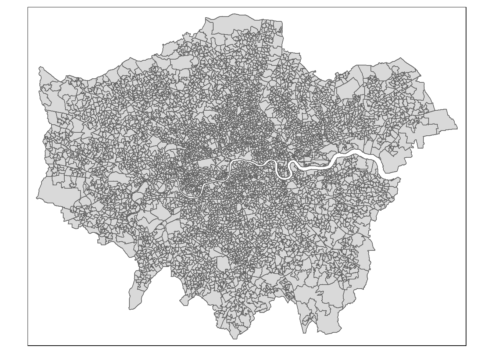
This is the correct shape of London with no LSOAs missing, so the next step can be conducted. The bedroom data from the 2021 census needs to be loaded into R. This data is aggregated at the LSOA level, which is useful as this is the same level as the geospatial data for London loaded above.
#Load housing bedroom data into R from NOMIS
bedrooms_lsoa <- read.csv('census2021-ts050-lsoa.csv')
View(bedrooms_lsoa)Viewing the dataset shows that the names of all the variables in this dataset are very long to type out, so they can be simplified as shown below.
#Rename columns to make them shorter
bedrooms_lsoa$totalbedrooms <- bedrooms_lsoa$Number.of.bedrooms..Total..All.households
bedrooms_lsoa$onebed <- bedrooms_lsoa$Number.of.bedrooms..1.bedroom
bedrooms_lsoa$twobed <- bedrooms_lsoa$Number.of.bedrooms..2.bedrooms
bedrooms_lsoa$threebed <- bedrooms_lsoa$Number.of.bedrooms..3.bedrooms
bedrooms_lsoa$fourbed <- bedrooms_lsoa$Number.of.bedrooms..4.or.more.bedroomsNow the variable names are easy to understand and shorter to fit nicely into the R script.
The data from both the bedroom data frame, and the London LSOA file need to be merged together to create the maps by the LSOA code. A left join is conducted here, indicated by 'all.x=T', as this allows all of the geographic regions from the LSOA_London object to be preserved. This means that if there is missing data for bedrooms for a particular LSOA, the LSOA will still be mapped and not removed from the data.
#Merge LSOA_London spatial file with the bedroom data by geography code
London_bedrooms_LSOA<- merge(LSOA_London, bedrooms_lsoa, by.x="LSOA21CD", by.y="geography.code", all.x=T)It is important to check for NA values after a left join, as these would need to be adjusted before creating the maps.
#Check for NAs
sum(is.na(London_bedrooms_LSOA))[1] 0Luckily there are no NA values, meaning the left join of the data took place without any issues.
Basic Map
Before producing a basic map, I have inserted a map of the boroughs of London for reference, to make it easier to interpret the maps, and provide locations for those reading this report that are unfamiliar with London (Source: https://fity.club/lists/suggestions/boroughs-of-london-map/).

A basic map can now be produced. All maps in this report focus on properties with 4 or more bedrooms, so this map shows the number of properties in each LSOA with 4 or more bedrooms. A quantile style map is used for this basic map, but in later sections I will explain and illustrate the different styles of maps, and choose an appropriate map for the final maps.
#First map, basic quantile map showing number of 4+ bedroom properties
tm_shape(London_bedrooms_LSOA) +
tm_fill(col = "fourbed",
style = "quantile",
palette = "Blues",
n = 5,
title = "Number of properties with 4 or more bedrooms") +
tm_layout(main.title = "Number of properties with 4 or more bedrooms in London (2021)",
main.title.fontface = 2,
legend.outside = TRUE,
frame = FALSE,
legend.outside.position = "right",
legend.title.size = 1,
legend.title.fontface = 2)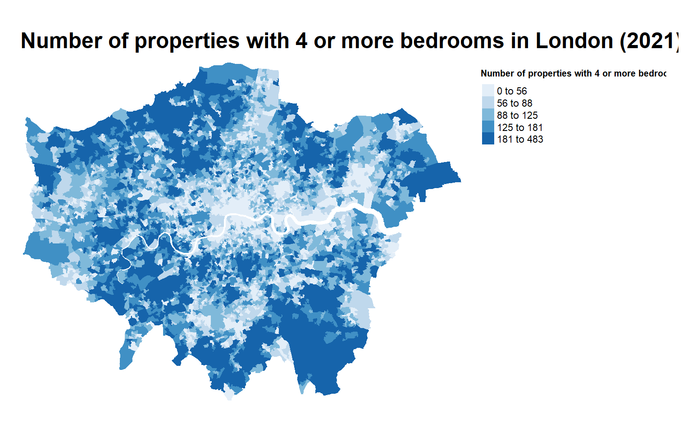
IMPORTANT NOTE: Titles on maps produced may not fit onto the map fully. To fix this, make the size of the plot window in RStudio larger to allow the map to be displayed properly.
This map shows that LSOAs in Central London have the lowest number of properties with 4 or more bedrooms, and LSOAs towards the edge of London, in boroughs such as Bromley and Barnet, have the highest number of properties with 4 or more bedrooms. This is as expected as there is more space to build larger properties towards the edge of London than compared to the centre where space is limited.
However, this map has a major issue. It shows the absolute number of properties with 4 or more bedrooms in each LSOA. As LSOAs vary by size, there can be a different total number of properties in each LSOA, for example larger LSOAs in the suburbs may contain more total properties, as there is more residential zoning, meaning there would be a higher chance of more properties having 4 or more bedrooms. There is a lack of consistency in this map, as each LSOA does not have the same number of total properties.
It is important to try not to map absolute values of a variable, such as crime (or in this case number of bedrooms), and instead create a rate or proportion when mapping. The next section outlines how to transform these absolute values into a percentage to create a more useful map.
Transforming Data
Since the ‘number of properties with 4 or more bedrooms’ metric is problematic, this can be transformed to the ‘percentage of properties with 4 or more bedrooms’. This is a much better metric as it now shows which LSOAs have the highest proportion of large properties, by accounting for the differing sizes of LSOAs and differing numbers of properties in LSOAs.
To create the new percentage variable, the number of properties in each LSOA with 4 or more bedrooms can be divided by the total number of properties in each LSOA, and then multiplied by 100.
#Create % variable
London_bedrooms_LSOA$fourbedperc <- (London_bedrooms_LSOA$fourbed/London_bedrooms_LSOA$totalbedrooms)*100This new variable can now be mapped in the same format and style as the previous map.
#Create map with new % variable
tm_shape(London_bedrooms_LSOA) +
tm_fill(col = "fourbedperc",
style = "quantile",
palette = "Blues",
n = 5,
title = "Percentage of properties with 4 or more bedrooms") +
tm_layout(main.title = "Bedroom data converted to %",
main.title.fontface = 2,
legend.outside = TRUE,
frame = FALSE,
legend.outside.position = "right",
legend.title.size = 1,
legend.title.fontface = 2)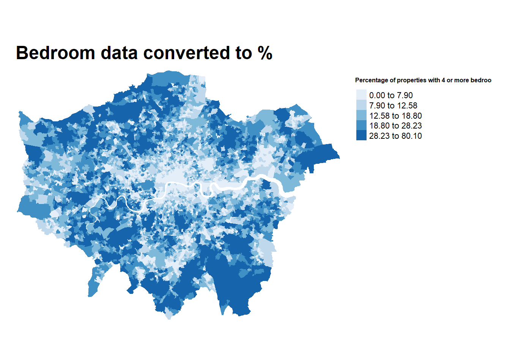
This new map provides a better understanding of which areas of London have the most multi bedroom homes. As expected this is mainly in the suburbs with many areas of Bromley, Barnet and Harrow having the greatest percentage of homes with 4 or more bedrooms. Areas in Central and East London have the lowest percentage of properties with 4 or more bedrooms, but there are some areas of Kensington & Chelsea and Westminster with higher percentages. While the map may look slightly similar to the previous map, it provides a more accurate representation of property data for London.
Map Style: Quantile
When creating a map using 'tmap' it is important to specify the style of the map using 'style='. After specifying the number of classes in the map (in this case 5 classes), the style of how the 5 colour classes are created can be specified. Each style is a different way of presenting the bedroom data in a map.
Before providing an overview of the quantile method, it is useful to visualise the distribution of the 'fourbedperc' variable using a histogram.
#Create histogram of % variable
ggplot(London_bedrooms_LSOA, aes(x=fourbedperc)) +
geom_histogram(binwidth = 1, color = 'black', fill = '#ff2800') +
labs(title = 'Distribution of the percentage of properties with 4 or more bedrooms',
x='Count',
y='Percentage of properties with four or more bedrooms')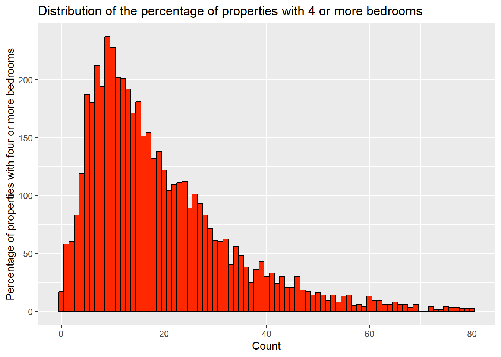
This histogram shows that most LSOAs in London have a percentage of properties with four or more bedrooms between 4 and 20 percent. This histogram shows that the data is positively skewed to the right, where there are much fewer LSOAs with more than 35% of properties having 4 or more bedrooms. The challenge of mapping style is to divide the data from this histogram into 5 representative classes on a map.
Additionally, a set of summary statistics can be obtained for the variable to identify the mean, median and interquartile range.
#Obtain summary statistics of % variable
summary(London_bedrooms_LSOA$fourbedperc) Min. 1st Qu. Median Mean 3rd Qu. Max.
0.000 9.044 15.371 18.960 25.502 80.100 50% of the data lies below 15.371%, and the mean is 18.96, indicating that most LSOAs do not have a high percentage of properties with more than 4 bedrooms.
The first style outlined in this report is the 'quantile' style. This method divides the total number of LSOAs (in this case 4994) into 5 equally sized classes, so each class represents 20% of the data evenly. This is shown in the map below, with a histogram in the legend, coloured in by the different classes.
#Create quantile map
tm_shape(London_bedrooms_LSOA) +
tm_fill(col = "fourbedperc",
style = "quantile",
palette = "Blues",
n = 5,
title = "Percentage of properties with 4 or more bedrooms",
legend.hist = TRUE) +
tm_layout(main.title = "Quantile style map",
main.title.fontface = 2,
legend.outside = TRUE,
frame = FALSE,
legend.outside.position = "right",
legend.title.size = 1,
legend.title.fontface = 2)This map has already been interpreted in a previous section, but the histogram in the legend shows clearly how the data has been divided into 5 classes with an equal number of LSOAs. This is a useful map to use when identifying the bottom or top 20% of LSOAs, and is commonly used when mapping variables such as the Index of Multiple Deprivation (IMD), which is measured in 10 deciles, each representing 10% of LSOAs in the United Kingdom. For this map there is an issue where the class sizes significantly vary, where one class is less than 5% wide, but one class is over 50% wide, creating an unappealing legend.
Map Style: Fixed Breaks
The 'fixed' style allows the user to manually specify the size of every class break using the ‘breaks=’ line of code. As the data ranges from 0 to 80.1 (rounded to 81), fixed breaks can be used to create equal sized breaks, equally spaced out between 0 and 81, as shown below.
#Create fixed breaks map
tm_shape(London_bedrooms_LSOA) +
tm_fill(col = "fourbedperc",
style = "fixed",
breaks = c(0, 16.2, 32.4, 48.6, 64.8, 81),
palette = "Blues",
n = 5,
title = "Percentage of properties with 4 or more bedrooms",
legend.hist = TRUE) +
tm_layout(main.title = "Fixed Breaks style map",
main.title.fontface = 2,
legend.outside = TRUE,
frame = FALSE,
legend.outside.position = "right",
legend.title.size = 1,
legend.title.fontface = 2)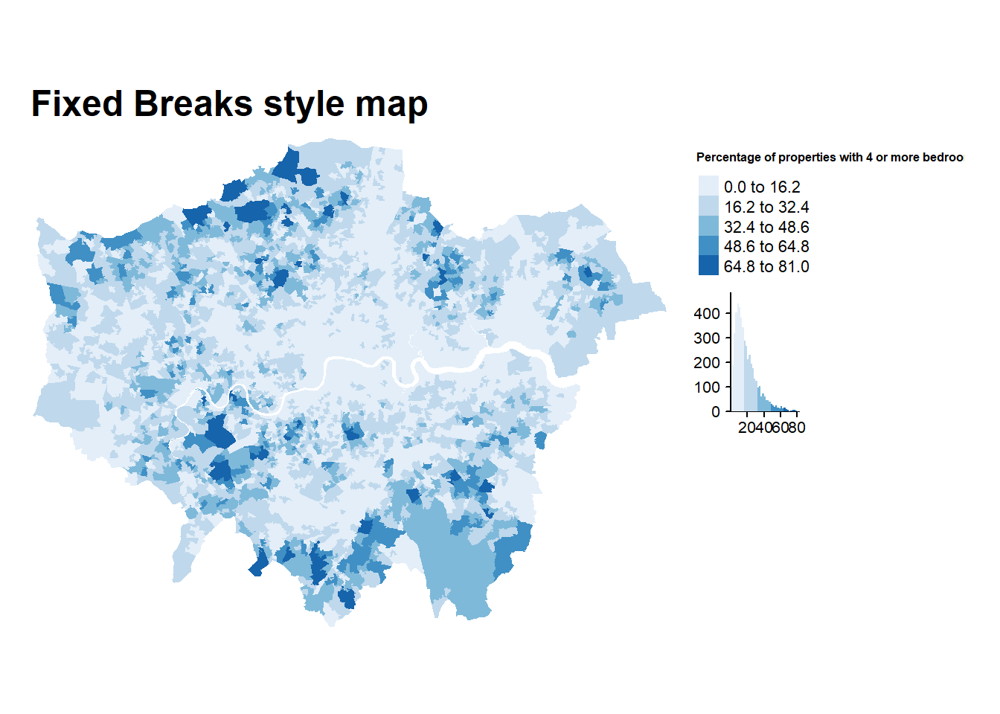
This map has a very different appearance compared to the quantile map, with the majority of LSOAs being shaded in the lightest blue. This map is useful in identifying which LSOAs have the highest percentage of properties with more than 4 bedrooms. These appear to be located in Barnet, Harrow, Wandsworth and Sutton, providing a different pattern to the map above which indicated that Bromley had the highest percentages. The main issue with this map is the class colours, as over 50% of the data (referring back to the median value) is coloured in the lightest shade of blue, which does not provide much useful information on the areas of London with the lowest percentages of 4 or more bed homes. Additionally with over 80% of the map coloured in the lightest two shades, this map is very difficult to interpret. The class sizes can be amended and then the map can be reinterpreted to solve this issue.
Map Style: Pretty
This map style aims to produce the ‘prettiest’ set of classes for the map, as shown below.
#Create pretty map
tm_shape(London_bedrooms_LSOA) +
tm_fill(col = "fourbedperc",
style = "pretty",
palette = "Blues",
n = 5,
title = "Percentage of properties with 4 or more bedrooms",
legend.hist = TRUE) +
tm_layout(main.title = "Pretty style map",
main.title.fontface = 2,
legend.outside = TRUE,
frame = FALSE,
legend.outside.position = "right",
legend.title.size = 1,
legend.title.fontface = 2)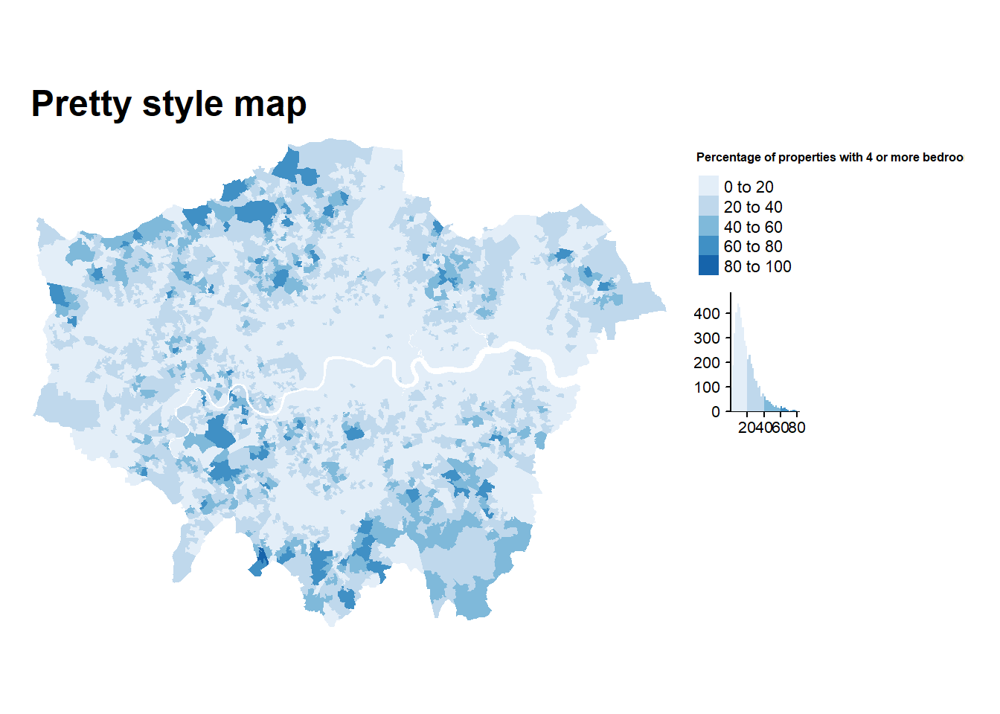
While the classes sizes are the most aesthetically pleasing, being spaced evenly between 0 and 100%, this map suffers from the same issues as the fixed breaks map to a greater degree. Only 1 LSOA has more than 80% of properties having 4 or more bedrooms, meaning that this map is a very poor representation of the variable of interest.
Map Style: Natural Breaks
The natural breaks style uses the 'jenks' or 'fisher' algorithm to determine the best set of class breaks in a set of data. The algorithm helps to minimise the variance within each class and maximize the variance between different classes, creating distinct classes. For this map, the 'fisher' style has been chosen as this works better with a larger set of data (4994 unique data points).
#Create fisher map
tm_shape(London_bedrooms_LSOA) +
tm_fill(col = "fourbedperc",
style = "fisher",
palette = "Blues",
n=5,
title = "Percentage of properties with 4 or more bedrooms",
legend.hist=TRUE) +
tm_layout(main.title = "Natural Breaks/Fisher style map",
main.title.fontface = 2,
legend.outside = TRUE,
frame = FALSE,
legend.outside.position = "right",
legend.title.size = 1,
legend.title.fontface = 2)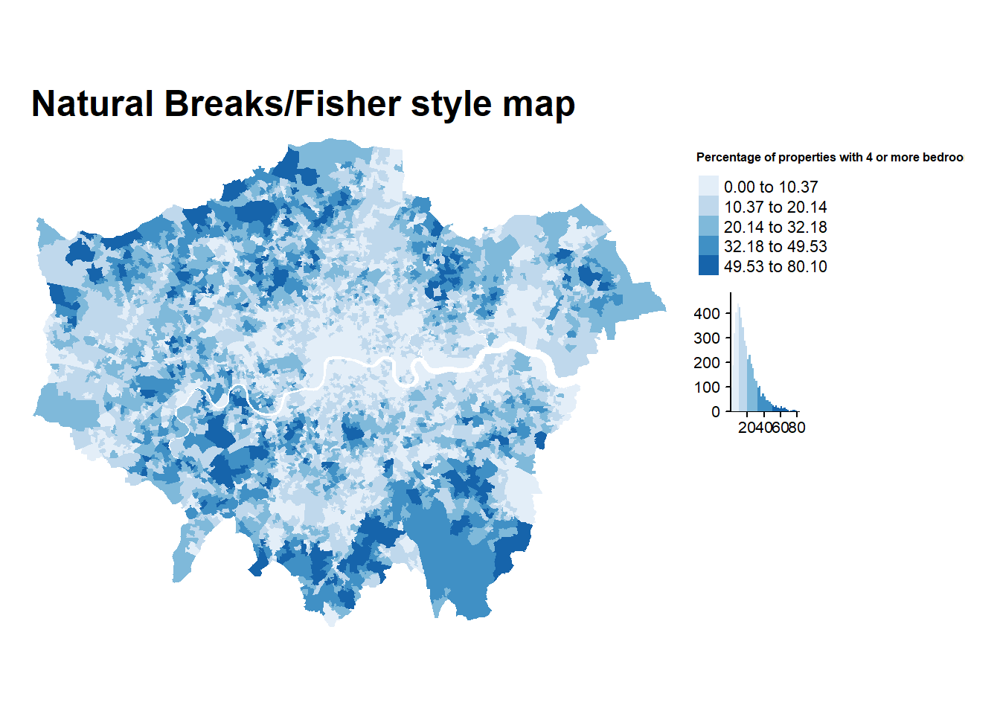
This map provides a bridging point between the excessive levels of light colour usage shown in the ‘pretty’ and ‘fixed’ maps, and the large amounts of darker shades of blue in the ‘quantile’ map. It is both easy to identify which LSOAs have the highest percentage of 4 or more bedroom houses in Barnet and Wandsworth, and easy to spot that Central and East London have the lowest percentages. This map still suffers from the same issues as the ‘pretty’ and ‘fixed’ maps, where a large proportion of the map is coloured in light shades of blue, but to a lesser extent. However, this map does show a good representation of the bedroom data.
Map Style: Headtails
The 'headtails' style is useful when dealing with right skewed data, such as our bedroom percentage data, and was proposed by Jiang (2013) https://www.tandfonline.com/doi/full/10.1080/00330124.2012.700499. This method is useful in determining the extreme values to the right of the distribution by creating appropriate classes.
#Create headtails map
tm_shape(London_bedrooms_LSOA) +
tm_fill(col = "fourbedperc",
style = "headtails",
palette = "Blues",
title = "Percentage of properties with 4 or more bedrooms",
legend.hist = TRUE) +
tm_layout(main.title = "Headtails style map",
main.title.fontface = 2,
legend.outside = TRUE,
frame = FALSE,
legend.outside.position = "right",
legend.title.size = 1,
legend.title.fontface = 2)This map clearly shows the LSOAs with higher percentages of properties with 4 or more bedrooms accurately, such as areas in Harrow, North Hillingdon, Barnet, Richmond, Wandsworth, Sutton, Havering and Redbridge. However, similar to the ‘pretty’ and ‘fixed’ maps, LSOAs at the bottom of the distribution with small percentages are grouped together into 1 large class, leading to over 60% of the map being coloured in light blue. This map style would be useful to present which LSOAs have the highest rates or percentages of a variable of interest, and is commonly used when presenting crime statistics.
Map Style: Continuous
The continuous 'cont' map style provides a continuous colour gradient between 0 and 80 meaning the lowest percentages are coloured in the lightest shades of blue and the highest values in the darkest shades. This method uses the entire range of the colour palette (10 different shades of blue), so can provide a map with a variety of shades to identify different regions.
#Create cont map
tm_shape(London_bedrooms_LSOA) +
tm_fill(col = "fourbedperc",
style = "cont",
palette = "Blues",
title = "Percentage of properties with 4 or more bedrooms") +
tm_layout(main.title = "Continuous style map",
main.title.fontface = 2,
legend.outside = TRUE,
frame = FALSE,
legend.outside.position = "right",
legend.title.size = 1,
legend.title.fontface = 2)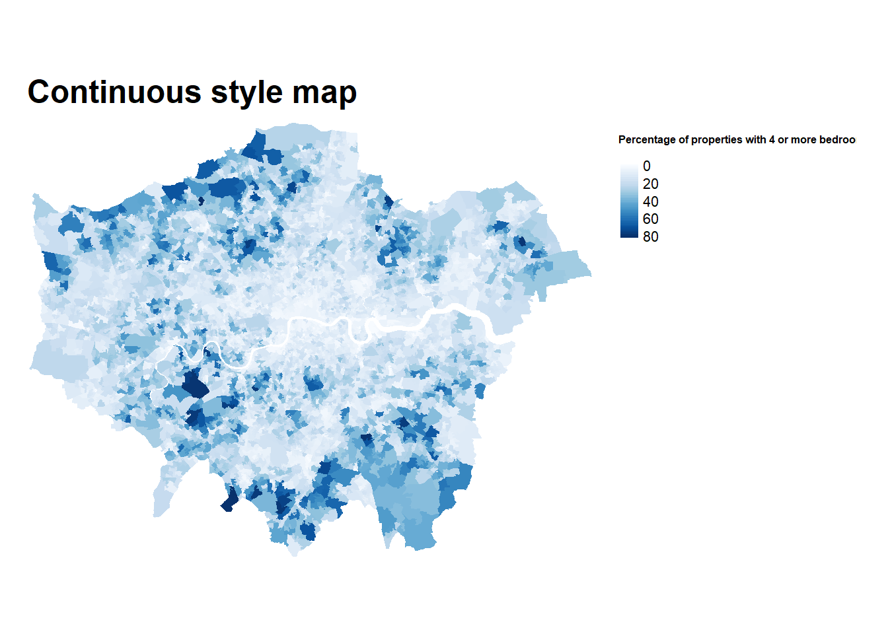
This is a very visually appealing map, as both high and low percentages are coloured in appropriately and are easy to distinguish. The major issue is that the continuous colour gradient does not use a set of fixed class widths, so it is not easy to determine the specific values which a coloured LSOA lies within. This is a reason why this style of map is not used commonly to present this style of data. However, this style of map is useful to use when presenting Kernel Density maps, as shown in the image below for weapon crimes in Birmingham, England.

This is a more appropriate set of data to use this style of map, to indicate where weapon possession crimes are more likely to occur in this city.
Selection of map style
After viewing all the different styles of maps produced for the bedroom data above, I have chosen the 'fisher' natural breaks method for the final map, as this map provides a good representative use of the colour palette, while also being easy to identify LSOAs with low and high percentages of properties with 4 or more bedrooms. Additionally, this style of map has classes which are appropriately sized, neither too big or too small, being a good fit for the final map.
Adding borders
Throughout all of the maps produced above, it is hard to distinguish between many LSOAs with similar colours, as it is unclear where one LSOA ends and the next one begins. To deal with this issue, borders can be added on the map between the LSOAs to provide outlines of their locations. The tm_borders function has 3 parameters which need specifying: 'lwd', 'col' and 'alpha'. 'lwd' indicates the line width of the border, 'col' indicates the colour of the border, and 'alpha' indicates the transparency of the border. For LSOA borders, a low 'lwd' and 'alpha' are selected to make sure the borders are not too thick and cover neighbouring LSOAs.
#Add thin LSOA borders to fisher map
tm_shape(London_bedrooms_LSOA) +
tm_fill(col = "fourbedperc",
style = "fisher",
palette = "Blues",
n=5,
title = "Percentage of properties with 4 or more bedrooms",
legend.hist=TRUE) +
tm_borders(lwd=0.1,
col = 'black',
alpha = 0.2) +
tm_layout(main.title = "Adding LSOA borders",
main.title.fontface = 2,
legend.outside = TRUE,
frame = FALSE,
legend.outside.position = "right",
legend.title.size = 1,
legend.title.fontface = 2)With these thin borders, it is easier to distinguish between each LSOA, especially in areas with the same colour class throughout.
However, these borders can be made to look even better. Throughout this entire report I have been stating names of boroughs in London from the map at the start, but this map does not contain those borders, making it difficult to identify exactly which borough each LSOA lies within. Additionally, those unfamiliar to the layout of London may find it difficult to locate different areas of London without clear borders.
To add these borough borders, the local authority geopackage needs to be loaded into R.
#Load .gpkg containing information on Local Authorities
LAs_2021 <- st_read('Local_Authority_Districts_December_2021_GB_BGC.gpkg')Reading layer `LAD_DEC_2021_GB_BGC' from data source
`C:\Users\vmist\Documents\Vishal\Vishal\PortfolioLocal\Local_Authority_Districts_December_2021_GB_BGC.gpkg'
using driver `GPKG'
Simple feature collection with 363 features and 8 fields
Geometry type: MULTIPOLYGON
Dimension: XY
Bounding box: xmin: 5512.998 ymin: 5352.6 xmax: 655653.8 ymax: 1220302
Projected CRS: OSGB36 / British National GridAfter viewing the dataset, the shapes of the 32 boroughs of London and the City of London need to be extracted from the spatial file containing information on all local authorities in England.
Conveniently, all the necessary areas for this map are located next to each other in the dataset in rows 277 to 309, making the filtering of this data easier.
#Extract rows which contain information on London boroughs
rows_to_extract <- 277:309
London_Boroughs <- LAs_2021[rows_to_extract, ]A basic map can be created to see if the filtering has been conducted correctly.
#Create a basic map of boroughs
tm_shape(London_Boroughs)+
tm_fill() +
tm_borders()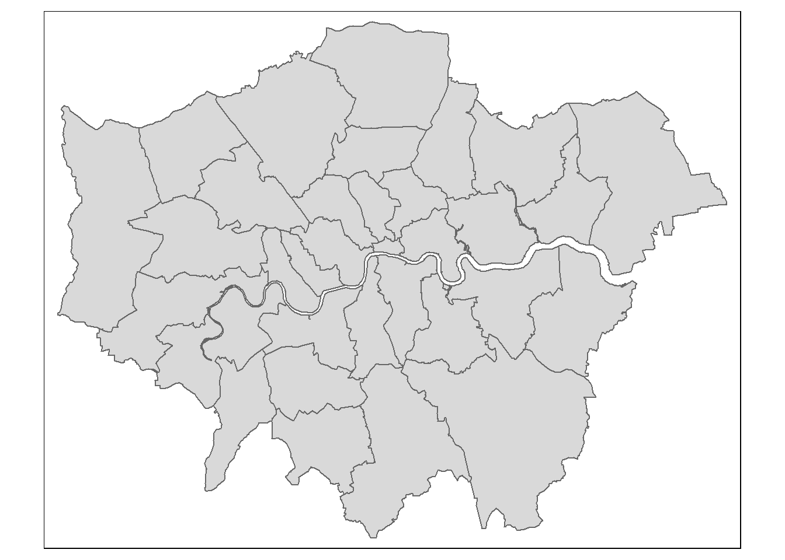
This appears to be accurate, showing all 32 London borough outlines and the City of London.
Now these borders can be added to the map of bedroom data in London. The borough outlines are going to be thicker and opaque, compared to the LSOA borders, as these need to be clearer and more visible on the map produced. To add these borders, another tm_shape layer needs to be added after the tm_borders for the LSOA bedroom data, and then the same tm_borders function can be conducted afterwards, as shown below.
#Adding thick borough borders
tm_shape(London_bedrooms_LSOA) +
tm_fill(col = "fourbedperc",
style = "fisher",
palette = "Blues",
n=5,
title = "Percentage of properties with 4 or more bedrooms",
legend.hist=TRUE) +
tm_borders(lwd=0.1,
col = 'black',
alpha = 0.2) +
tm_shape(London_Boroughs) +
tm_borders(lwd=2,
col = 'black',
alpha = 1) +
tm_layout(main.title = "Adding borough borders",
main.title.fontface = 2,
legend.outside = TRUE,
frame = FALSE,
legend.outside.position = "right",
legend.title.size = 1,
legend.title.fontface = 2)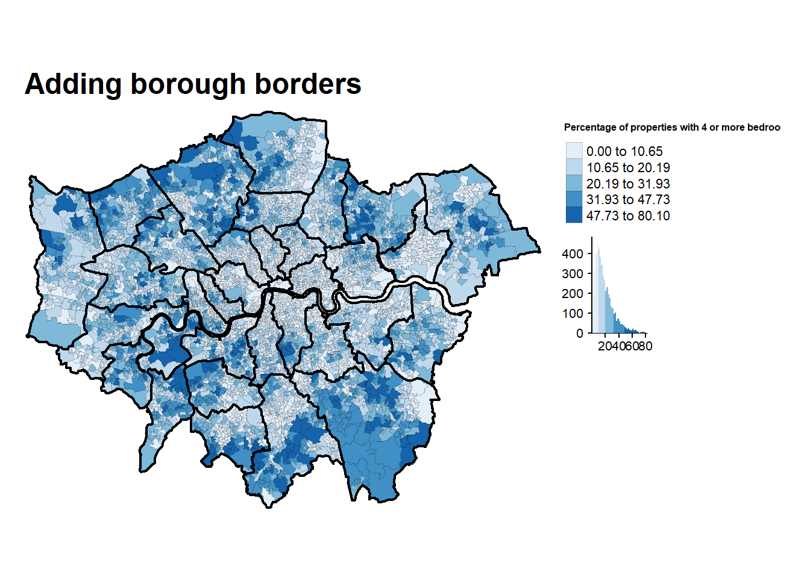
Now it is very clear to see which boroughs each LSOA lies within, and boroughs with high percentages, such as Barnet and Richmond, and low percentages, such as Tower Hamlets and Islington.
Adding additional layout elements
There are still some key elements missing from the map that need to be added before being published. The first is adding a compass. All maps should have a compass, and this can be added using the tm_compass function, where the type of compass (in this case an arrow), and the location of the compass on the map (bottom right) can be specified.
All maps should also include a scale bar for reference. This can be added with the tm_scale_bar function, where position can be specified. The size of the scale bar can be adjusted using the 'breaks' line of code, where in this case the scale bar is 20 kilometers long, with breaks every 5 kilometers.
When producing maps using open access data, data sources should be listed on the map using the tm_credits function. This allows a small section of text to be written at the bottom of the map. Size, style and position of the text can be adjusted. For the maps produced, the two sources of data were ONS, for the geopackages, and NOMIS, for the bedroom data.
#Adding additional map elements
tm_shape(London_bedrooms_LSOA) +
tm_fill(col = "fourbedperc",
style = "fisher",
palette = "Blues",
n=5,
title = "Percentage of properties with 4 or more bedrooms",
legend.hist=TRUE) +
tm_borders(lwd=0.1,
col = 'black',
alpha = 0.2) +
tm_shape(London_Boroughs) +
tm_borders(lwd=2,
col = 'black',
alpha = 1) +
tm_layout(main.title = "Adding compass, scale bar & credits",
main.title.fontface = 2,
legend.outside = TRUE,
frame = FALSE,
legend.outside.position = "right",
legend.title.size = 1,
legend.title.fontface = 2) +
tm_compass(type = "arrow",
position = c("right", "bottom")) +
tm_scale_bar(breaks = c(0, 5, 10, 15, 20),
position = c("left", "bottom")) +
tm_credits('Data source: ONS, NOMIS',
fontface = 'italic',
align = 'right',
size = 0.5)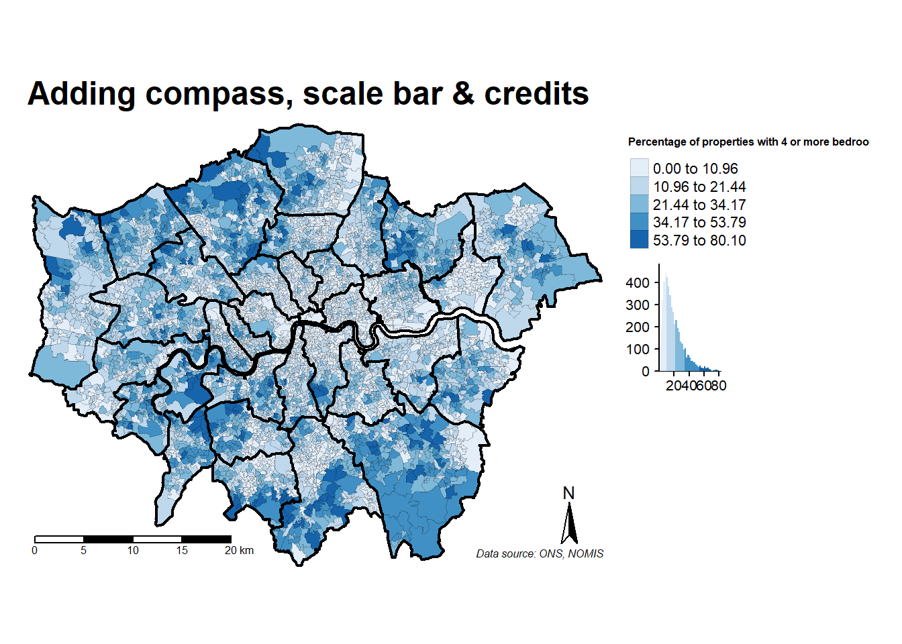
Now this map can be published online, as all the elements needed in a map are present, and the data is presented effectively.
Bonus: Creating a custom colour palette
While the above map is able to be published without issues, the colour palette could be changed. In all the maps produced the colour palette has been specified as 'Blues' from the ‘RColorBrewer’ package, but this package contains many other different palettes as shown below.
#View colour palette
RColorBrewer::display.brewer.all()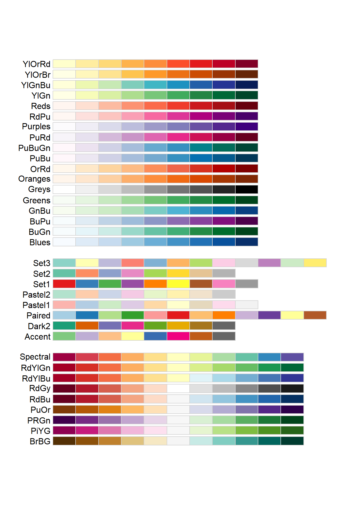
There a variety of different colour palettes to choose from here.
Custom colour palettes can also be created. Personally, I do not like the large amount of pale blue/white on the map, so changing this to a different more visible colour would be ideal. To do this, the hex code of the each colour for each class needs to be specified in R. Two useful websites to select hex codes are https://www.w3schools.com/colors/colors_mixer.asp and https://www.colorhexa.com/. In this map, low percentages are yellow, and high percentages are green, with a transition of these colours in the classes in between.
#Create final map with custom colours
tm_shape(London_bedrooms_LSOA) +
tm_fill(col = "fourbedperc",
style = "fisher",
palette = c('#ffff00', '#bfe600', '#80cc00', '#40b200', '#009900'),
n=5,
title = "Percentage of properties with 4 or more bedrooms",
legend.hist=TRUE) +
tm_borders(lwd=0.1,
col = 'black',
alpha = 0.2) +
tm_shape(London_Boroughs) +
tm_borders(lwd=2,
col = 'black',
alpha = 1) +
tm_layout(main.title = "% of properties with 4 or more bedrooms in London (2021)",
main.title.fontface = 2,
legend.outside = TRUE,
frame = FALSE,
legend.outside.position = "right",
legend.title.size = 1,
legend.title.fontface = 2) +
tm_compass(type = "arrow",
position = c("right", "bottom")) +
tm_scale_bar(breaks = c(0, 5, 10, 15, 20),
position = c("left", "bottom")) +
tm_credits('Data source: ONS, NOMIS',
fontface = 'italic',
align = 'right',
size = 0.5)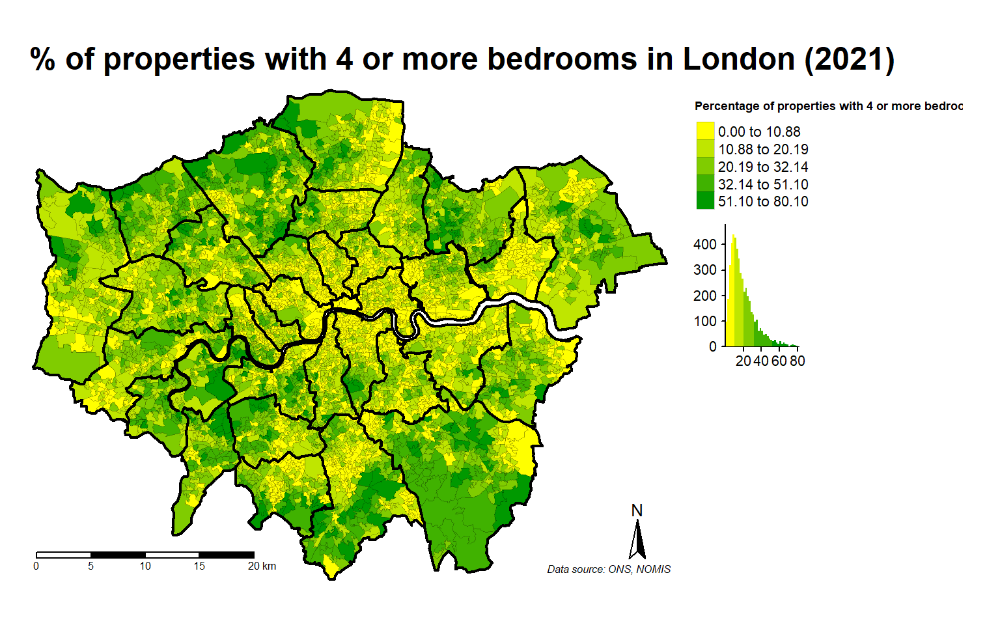
Now this is an easy to interpret, colourful map, with all the key elements required for publishing.
Conclusion
By reading this report, the user should now be able to design a presentable map in RStudio using tmap, and be able to make choices as to which style of map is appropriate when creating maps on variables of interest.
References
Jiang, B. (2013) ‘Head/Tail Breaks: A New Classification Scheme for Data with a Heavy-Tailed Distribution’, The Professional Geographer, 65 ,3, 482–494, https://www.tandfonline.com/doi/full/10.1080/00330124.2012.700499.
Medina, J. and R. Solymosi (2022) ‘Chapter 4 Mapping rates and counts’, Crime Mapping and Spatial Data Analysis using R, https://maczokni.github.io/crime_mapping/mapping-rates-and-counts.html
North, M.A. (2009) ‘A Method for Implementing a Statistically Significant Number of Data Classes in the Jenks Algorithm’, 2009 Sixth International Conference on Fuzzy Systems and Knowledge Discovery, 35-38, https://ieeexplore.ieee.org/abstract/document/5358673?casa_token=wEQNaCewnNQAAAAA:bkS9ugVODIWEeQl8p8YmJU9bUCRk117kTHnmbW2MkNp-T9omDDdrtRQCBZKvGFvYoDXBBozN.
RDocumentation (2024) ‘tm_fill: Draw polygons’, https://www.rdocumentation.org/packages/tmap/versions/3.3-4/topics/tm_fill.
Tennekes M. (2018), ‘tmap: Thematic Maps in R’, Journal of Statistical Software, 84, 6, 1–39, https://r-tmap.github.io/tmap/.
Tennekes, M. and J. Nowosad (2021) ‘Chapter 6 Visual Variables’, Elegant and informative maps with tmap, https://r-tmap.github.io/tmap-book/visual-variables.html.